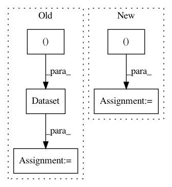

7ffcd4a2a5213c0a7de9fdc3aff4725c166db986,arviz/tests/test_plots.py,,test_plot_ppc_discrete,#Any#Any#,398
Before Change
def test_plot_ppc_discrete(kind, animated):
data = MagicMock(spec=InferenceData)
observed_data = xr.Dataset({"obs": (["obs_dim_0"], [9, 9])}, coords={"obs_dim_0": [1, 2]})
posterior_predictive = xr.Dataset(
{"obs": (["draw", "chain", "obs_dim_0"], [[[1]], [[1]]])},
coords={"obs_dim_0": [1], "chain": [1], "draw": [1, 2]},
)
data.observed_data = observed_data
data.posterior_predictive = posterior_predictive
axes = plot_ppc(data, kind=kind, animated=animated)
assert axes
After Change
@pytest.mark.parametrize("kind", ["density", "cumulative", "scatter"])
@pytest.mark.parametrize("animated", [False, True])
def test_plot_ppc_discrete(kind, animated):
data = from_dict(
observed_data={"obs": np.random.randint(1, 100, 15)},
posterior_predictive={"obs": np.random.randint(1, 300, (1, 20, 15))},
)
animation_kwargs = {"blit": False}
axes = plot_ppc(data, kind=kind, animated=animated, animation_kwargs=animation_kwargs)
In pattern: SUPERPATTERN
Frequency: 3
Non-data size: 5
Instances
Project Name: arviz-devs/arviz
Commit Name: 7ffcd4a2a5213c0a7de9fdc3aff4725c166db986
Time: 2019-01-27
Author: ahartikainen@users.noreply.github.com
File Name: arviz/tests/test_plots.py
Class Name:
Method Name: test_plot_ppc_discrete
Project Name: cesium-ml/cesium
Commit Name: 2ab1119596b420cc696a783271d617562ccf7e28
Time: 2017-03-29
Author: brettnaul@gmail.com
File Name: cesium/tests/fixtures.py
Class Name:
Method Name: sample_featureset
Project Name: idaholab/raven
Commit Name: 0ca2ef263f600ee029f208dfca8fef7b8fe5038b
Time: 2020-08-23
Author: mohammad.abdo@inl.gov
File Name: framework/Optimizers/GeneticAlgorithm.py
Class Name: GeneticAlgorithm
Method Name: _useRealization